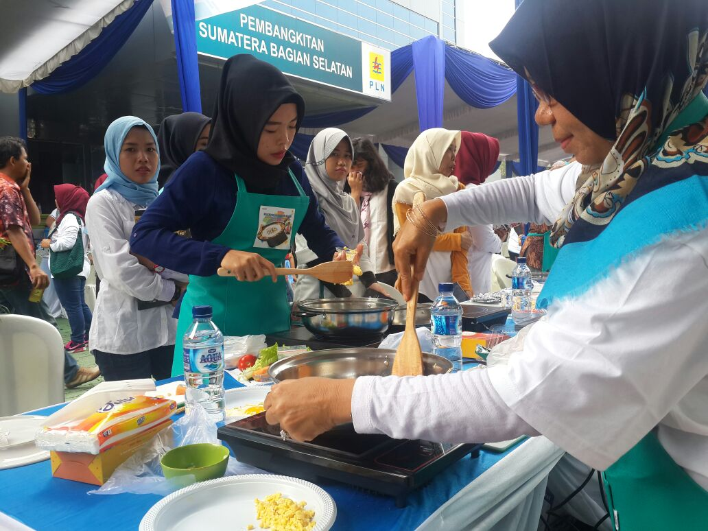

Berita
PLN Pecah Rekor MURI : Lomba Masak Dengan Kompor Induksi Serentak Di 5 Provinsi
Bagikan : facebook || twitter
Siaran pers || 09 Feb 2018

Palembang, 9 Februari 2018
Bersama 1.479 pegawai, PLN pecahkan rekor MURI (Museum Rekor Indonesia) melalui kegiatan “Lomba Memasak Menggunakan Kompor Induksi secara Serentak di Lokasi Terbanyak”. Kegiatan yang berlangsung pada Jumat pagi (9/2) ini dilakukan oleh PLN Pembangkitan Sumatera Bagian Selatan beserta 10 Sektor di bawahnya yang tersebar dari Sumatera Barat hingga Lampung.
“Selamat kepada PLN. Hari ini MURI mencatat sebuah peristiwa yang masuk dalam salah satu kriteria MURI, yakni superlatif, yang berarti bentuk kegiatan yang melibatkan banyak peserta,” ungkap Awan Rahargo, Senior Manager MURI.
Sebelumnya MURI juga pernah mencatat kegiatan serupa (memasak dengan kompor induksi) yang dilakukan PLN Wilayah Bangka Belitung pada November 2017 (135 kompor). Rekor ini kemudian dipecahkan oleh PLN Wilayah Sumatera Utara pada Desember 2017 (175 kompor). Namun, kegiatan yang berlangsung di Kantor PLN Pembangkitan Sumbagsel pagi ini merupakan kegiatan masal pertama yang dilakukan secara serentak di 5 provinsi yang pernah MURI catat.
Melalui kegiatan ini diharapkan masyarakat juga tertarik untuk menggunakan kompor induksi.
“Dibandingkan dengan kompor LPG, memasak dengan kompor listrik lebih aman, mudah dan praktis. Kemudian lebih bersih dan yang pasti, lebih murah. Ini adalah sebuah konversi yang seharusnya sudah kita lakukan,”
Terang General Manajer PLN Pembangkitan Sumbagsel R. Bambang Anggono.
PLN sebagai produsen energi kelistrikan di Indonesia, memulai program penggalakan penggunaan Kompor Induksi yang dimulai dari kalangan internal. Seluruh pegawai di bawah PLN Pembangkitan Sumbagsel sendiri sudah menggunakan kompor induksi.
Dengan didukung Kementerian Energi dan Sumber Daya Mineral (ESDM), PLN akan menyebarluaskan penggunaan kompor induksi guna mengurangi ketergantungan masyarakat pada Liquefied Petroleum Gas (LPG) atau elpiji. Penggunaan kompor induksi sebagai subtitusi kompor dengan gas LPG diharapkan dapat menekan impor LPG di Indonesia.
Selanjutnya di PLN Pembangkitan Sumbagsel, Bambang akan membudayakan produk-produk yang memanfaatkan energi listrik lainnya, seperti sepeda listrik.
“Selanjutnya kami ingin menginisiasi lomba sepeda listrik. Kami ingin mensosialisasikan kepada masyarakat bahwa listrik itu baik. Ke depan PLN juga akan mengedepankan Energi Baru Terbarukan, sehingga lebih ramah lingkungan dan lebih baik untuk generasi penerus kita,” pungkas Bambang.
Copyright©2020 PT. PLN (Persero) UPB Sumbagsel